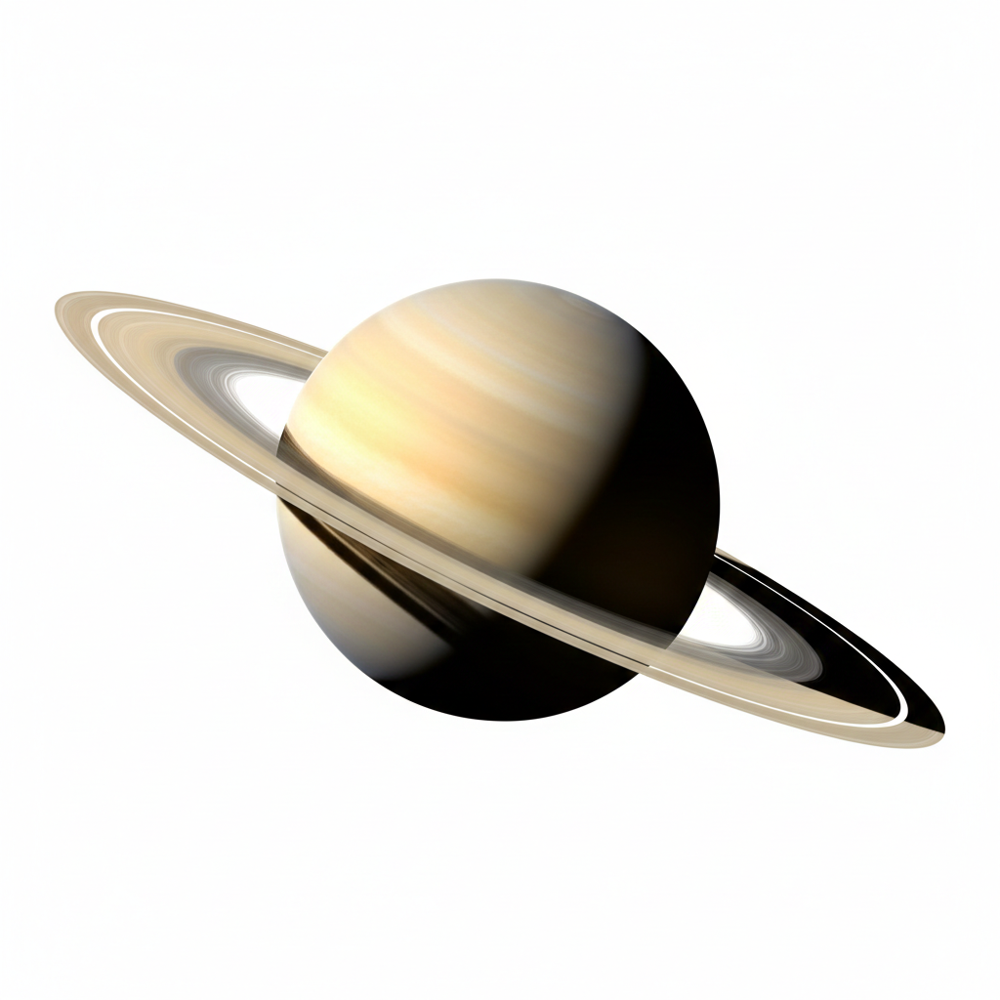

Saturno é o sexto planeta a partir do Sol e o segundo maior do Sistema Solar, ficando atrás apenas de Júpiter. É um gigante gasoso, composto principalmente por hidrogênio e hélio, com um núcleo denso de rocha, gelo e água. Apesar de seu tamanho, Saturno possui a menor densidade de todos os planetas do Sistema Solar — menor que a da água —, o que significa que, em um oceano suficientemente grande, ele flutuaria.
Sistema de Anéis O planeta é mais conhecido por seu complexo sistema de anéis, formado por gelo de água, poeira e fragmentos de rocha. Os anéis se estendem por mais de 120.000 km do planeta, mas são incrivelmente finos — com apenas 20 metros de espessura. Eles são divididos em múltiplos anéis distintos, com estruturas dinâmicas influenciadas pela gravidade de suas luas. A inclinação do eixo de Saturno faz com que, a cada 30 anos, os anéis pareçam desaparecer quando vistos da Terra, fenômeno que ocorreu em 2008–2009 e voltará em 2024–2025.
Luas Saturno possui 146 luas confirmadas, sendo a maior delas Titã, a segunda maior lua do Sistema Solar, com uma atmosfera densa de metano. Outra lua notável é Encélado, que possui geysers de gelo no polo sul, indicando a presença de água líquida sob a superfície — um dos principais candidatos à existência de vida extraterrestre.